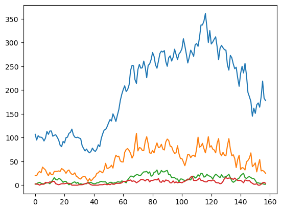
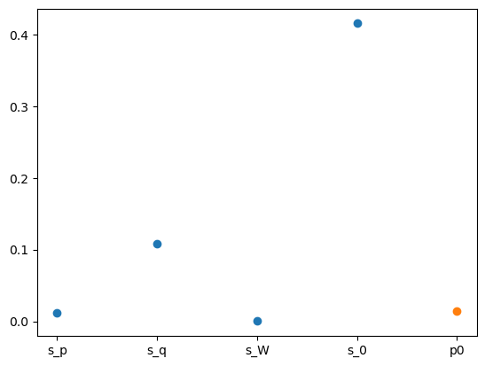

dates[0], dates[-1]('2021-04-05', '2023-10-04')dates[0], dates[-1]('2021-04-05', '2023-10-04')a_index = -1
h = h_by_age[a_index]
I = I_by_age[a_index]
unique_a[a_index]'00+'[jnp.max(h_by_age[i].sum(axis=-1) / I_by_age[i]) for i in range(len(unique_a))][Array(0.88235294, dtype=float64),
Array(0.42857143, dtype=float64),
Array(0.20802005, dtype=float64),
Array(0.31587057, dtype=float64),
Array(0.74633431, dtype=float64),
Array(1.09724473, dtype=float64),
Array(0.63493344, dtype=float64)]np1 = 158
i_start = 260 # 231
i_end = i_start + np1
n_delay = 6
y = h[i_start : i_start + np1, :n_delay]
p0_hat = y[:7].sum() / I[i_start : i_start + 7].sum()
n_weekday = 2
aux = (np1, n_delay, n_weekday, I[i_start : i_start + np1])
theta_manual = jnp.log(
jnp.array(
[1**2, 1**2, 0.1**2, 0.1**2, p0_hat] # s2_p # s2_q # s2_W # p0 # s2_0
)
)
model_manual = hospitalization_model(theta_manual, aux)plt.plot(y / I[i_start : i_start + np1][:, None])plt.plot(y)
plt.show()
from ssm4epi.models.util import visualize_pgssm
visualize_pgssm(model_manual)
from isssm.estimation import initial_theta
theta0_result = initial_theta(y, hospitalization_model, theta_manual, aux, 100)
theta0 = theta0_result.x
theta0_result message: Optimization terminated successfully.
success: True
status: 0
fun: 5.256827861654503
x: [-8.761e+00 -4.908e+00 -1.072e+01 -3.119e+00 -3.532e+00]
nit: 36
jac: [-1.549e-06 6.966e-07 4.007e-07 2.218e-06 5.756e-06]
hess_inv: [[ 5.288e+01 -7.922e-03 ... -1.135e+00 2.247e+00]
[-7.922e-03 5.991e+00 ... 2.864e-01 -1.159e-01]
...
[-1.135e+00 2.864e-01 ... 1.022e+02 -5.347e+00]
[ 2.247e+00 -1.159e-01 ... -5.347e+00 3.627e+01]]
nfev: 440
njev: 40model0 = hospitalization_model(theta0, aux)
def plot_parameters(theta0):
sds = jnp.exp(theta0[:4] / 2)
p0 = jnp.exp(theta0[4])
plt.scatter(jnp.arange(4), sds)
plt.scatter(4, p0)
plt.xticks(jnp.arange(5), ["s_p", "s_q", "s_W", "s_0", "p0"])
plt.show()
plot_parameters(theta0)
from isssm.laplace_approximation import laplace_approximation as LA
from isssm.modified_efficient_importance_sampling import (
modified_efficient_importance_sampling as MEIS,
)
from isssm.importance_sampling import pgssm_importance_sampling, ess_pct
import jax.random as jrn
proposal_la, info_la = LA(y, model0, 100)
key = jrn.PRNGKey(423423423)
key, subkey = jrn.split(key)
proposal_meis, info_meis = MEIS(
y, model0, proposal_la.z, proposal_la.Omega, 100, 10000, subkey
)
key, subkey = jrn.split(key)
samples, log_weights = pgssm_importance_sampling(
y, model0, proposal_meis.z, proposal_meis.Omega, 1000, subkey
)
ess_pct(log_weights)Array(85.38643487, dtype=float64)jnp.linalg.eigvalsh(proposal_la.Omega).min()Array(8.53308697e-05, dtype=float64)visualize_model_fit(samples, log_weights, model0, i_start, np1, y, a_index)
Deviate from standard setup: now missing indices of \(B\) differ from those of \(Y\).
test: make everything in the last week of observations missing, except initial observation
y_nan = make_y_nan(y)
# need fewer data for missingness
np1_miss = 100
y_nan = y_nan[-np1_miss:]
# y_nan = y_nan[:83]
np1_miss, _ = y_nan.shape
missing_y_indices = jnp.isnan(y_nan)
missing_s_indicies = jnp.concatenate(
(jnp.full((np1_miss, 1), False, dtype=bool), missing_y_indices[:, :-1]), axis=-1
)
aux_miss = (np1_miss, n_delay, n_weekday, I[i_start + (np1 - np1_miss) : i_start + np1])
_, y_miss = account_for_nans(
hospitalization_model(theta0, aux_miss),
y_nan,
missing_y_indices,
missing_s_indicies,
)
_model_miss = lambda theta, aux: account_for_nans(
hospitalization_model(theta, aux), y_nan, missing_y_indices, missing_s_indicies
)[0] message: Desired error not necessarily achieved due to precision loss.
success: False
status: 2
fun: 4.61938723602526
x: [-8.761e+00 -4.613e+00 -1.072e+01 -3.055e+00 -3.662e+00]
nit: 2
jac: [ 3.004e-04 -7.560e-02 -7.003e-04 -1.635e-02 3.963e-02]
hess_inv: [[ 1.000e+00 -1.310e-02 ... -2.867e-03 5.721e-03]
[-1.310e-02 8.565e+00 ... 1.681e+00 -3.772e+00]
...
[-2.867e-03 1.681e+00 ... 1.371e+00 -8.318e-01]
[ 5.721e-03 -3.772e+00 ... -8.318e-01 2.853e+00]]
nfev: 582
njev: 52result = estimate_theta0_missing(y_nan, theta0, aux_miss, I[i_start: i_start + np1],)
theta0_missing = result.x
plot_parameters(theta0_missing)
result
message: Optimization terminated successfully.
success: True
status: 0
fun: 5.641690135301365
x: [-7.624e+00 -4.882e+00 -2.155e+01 -3.572e+00 -4.286e+00]
nit: 43
jac: [ 1.113e-06 -7.624e-06 2.420e-08 -3.275e-06 -4.825e-06]
hess_inv: [[ 4.046e+01 7.956e-01 ... 2.149e+00 1.062e+00]
[ 7.956e-01 3.755e+00 ... -2.142e+00 -2.584e-01]
...
[ 2.149e+00 -2.142e+00 ... 3.599e+01 -3.441e+00]
[ 1.062e+00 -2.584e-01 ... -3.441e+00 8.980e+00]]
nfev: 495
njev: 45model_miss0 = _model_miss(theta0_missing, aux_miss)
proposal_la, info_la = LA_missing(y_miss, model_miss0, 10000, eps=1e-10)
plt.figure(figsize=(20, 8))
plt.title(
f"Min. eigenvalue: {jnp.linalg.eigvalsh(proposal_la.Omega).min():.2f}, convereged in {info_la.n_iter} iterations"
)
plt.imshow(jnp.linalg.eigvalsh(proposal_la.Omega).T)
plt.colorbar()/var/folders/9y/xdxkkt710kx5tf1j0p68y46r0000gn/T/ipykernel_52604/869667675.py:70: DeprecationWarning: The rcond argument for linalg.pinv is deprecated. Please use rtol instead.
Omega = jnp.linalg.pinv(Gamma, hermitian=True, rcond=1e-5)
jnp.linalg.eigvalsh(proposal_la.Omega).min()Array(-6.17706532, dtype=float64)# print(jnp.linalg.eigvalsh(proposal_la.Omega).min(axis=1)[80:])
# print(missing_y_indices[78:])
plt.imshow(proposal_la.Omega[80])
plt.colorbar()
print(jnp.exp(model_miss0.dist(proposal_la.z, model_miss0.xi).log_rate[80]))
print(y_miss[80])
print(jnp.linalg.eigvalsh(proposal_la.Omega).min())[3325.93455402 1295.05228515 358.03265507 0. 0.
0. ]
[3326. 1295. 358. 0. 0. 0.]
-6.177065316487707
key, subkey = jrn.split(key)
samples, log_weights = pgssm_importance_sampling(
y_miss,
model_miss0,
proposal_la.z,
proposal_la.Omega,
1000,
subkey,
)
ess_pct(log_weights)Array(0.0823388, dtype=float64)from isssm.laplace_approximation import posterior_mode
plt.plot(posterior_mode(proposal_la))
visualize_model_fit(
samples,
log_weights,
model_miss0,
i_start + (np1 - np1_miss),
np1_miss,
y_miss,
a_index,
)
post = mc_integration(samples, log_weights)
post_state = mc_integration(
vmap(state_mode, (None, 0))(model_miss0, samples), log_weights
)
fig, axs = plt.subplots(3, 2, figsize=(10, 10))
axs = axs.flatten()
axs[0].plot(
jnp.exp(post[:, 0]) * I[i_start + (np1 - np1_miss) : i_start + np1],
label="predicted",
)
axs[0].plot(y_miss[-(np1_miss):].sum(axis=-1), label="truth missing")
axs[0].plot(y[-(np1_miss):].sum(axis=-1), label="truth")
axs[0].legend()
axs[1].plot(jnp.exp(post[:, 0]))
axs[2].plot(from_consecutive_logits(post[:, 1:]), linestyle="--")
axs[2].plot(from_consecutive_logits(post_state[:, 1:8]))
axs[3].plot(post_state[:, 1:8])
axs[4].plot(post_state[:, 8])
axs[4].plot(post_state[:, 8 + 6])
plt.show()
from isssm.importance_sampling import prediction
def f_nowcast(x, s, y):
return jnp.sum((missing_y_indices * y) + (1 - missing_y_indices) * y_miss, axis=-1)
key, subkey = jrn.split(key)
preds = prediction(
f_nowcast,
y_miss,
proposal_la,
_model_miss(theta0_missing, aux_miss),
10000,
subkey,
jnp.array([0.025, 0.5, 0.975]),
hospitalization_model(theta0_missing, aux_miss),
)# plt.plot(preds[0])
# plt.plot(preds[2][1])
plt.plot(jnp.clip(preds[2][0], 0.0), linestyle="--", color="grey")
plt.plot(preds[2][2], linestyle="--", color="grey")
plt.plot(y.sum(axis=-1)[-np1_miss:])
plt.show()